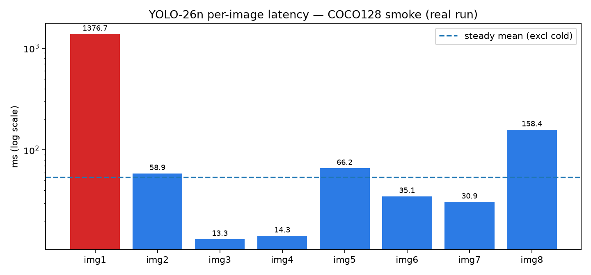

An independent lab that measures YOLO-26 on public photos and is already prepared to measure YOLO-27 on release day. No hype numbers. Every claim labeled. From first photo to publishable table.
Summary: YOLO-26 works today — we measured mAP50 0.637 / mAP50-95 0.479 (COCO128) at ~4.4 ms inference. YOLO-27 is announced but weights not public, so its 60+ mAP figures are previews, not measurements. This page proves both with artifacts.
⚡ Measured today
0.479
yolo26n mAP50-95 (COCO128, 128 imgs) · P 0.683 R 0.542 · artifacts
⏱️ Real speed
58.9 ms p50
8-image smoke · cold 1376 ms vs steady ~13–66 ms · why tails matter
🛡️ YOLO-27 status
UNAVAILABLE
Waitlist-only · harness blocks honestly · one flag reruns on release day
🔬 Hidden bet
H3: AP-medium?
Dropping the P3 scale may dip medium-object AP — pre-registered test with CIs
🌱 Learn from scratch to pro (5 minutes)
One idea at a time. By the end you beat most interview candidates.
📷 Photo in pixels
🧠 YOLO looks once one network, all boxes
📦 Boxes out what + where
📏 mAP scores it 50 = loose, 50-95 = strict
⏱️ p50/p95 times it median vs near-worst
📦➡️🚚 Export ships it ONNX / TensorRT / OpenVINO
Sizes:n tiny/fast (camera) → s → m → l accurate/hungry (GPU). Bigger is not better — it is a trade-off this repo measures on your hardware.
NMS-free in one line: old detectors predicted 100 overlapping boxes then cleaned up with hand-tuned NMS. YOLO-26/27 learn to output one clean box directly — simpler, more predictable latency. Use nms=False to pick the clean head.
Export gap in one line: PyTorch accuracy ≠ camera accuracy. Converting to ONNX/TensorRT/OpenVINO/LiteRT changes speed and accuracy. Measure both sides on the same images — that delta is hypothesis H1.
📊 Live measured results (the only local numbers)
Smoke: 8 COCO images, real yolo26n.pt → p50 58.85 ms, 2.75 detections/image. Full list in results/smoke.json. Bench: 128 imgs / 929 instances → P 0.683 · R 0.542 · mAP50 0.637 · mAP50-95 0.479, 122 layers / 2.4M params / 5.5 GFLOPs, 0.8 / 4.4 / 2.1 ms pre/infer/post. Artifact results/benchmark.json. Export A/B (new): same 18 images, FP32/FP32 → PyTorch p50 25.53 ms (max 77.0) vs ONNX p50 25.52 ms (max 30.4). Same median, 2.5× tighter tail — artifact results/export_ab.json. League: independent full-val2017 reference in experiments/leaderboard.csv (same-protocol re-evaluation, not local). Warning: COCO128 ≠ COCO val2017. Vendor 40.9 for 26n is val2017 (5000 imgs). Run --full before any fair comparison.

How to read the chart: first tall bar = cold start (weight load). The rest = steady state. Any latency claim without cold-vs-warm split and p50/p95 is incomplete.
🔬 Five hypotheses you can publish (confirmed or refuted)
ID
Bet
Pass/fail rule
Status
H1
Export changes speed + accuracy
Same images both runtimes; |Δp50|>15% or tail flip = meaningful
Measured: Δp50 −0.02 ms, tail 77→30 ms
H2
NMS-free has tighter latency tail
nms on/off p95/max; >15% = meaningful
Needs full data
H3
27-N/S dropping P3 risks AP-medium dip
Per-area AP + 1000× bootstrap CI
Pre-registered
H4
Heads are over-confident on clutter
Reliability curve; ECE >0.05 = miscalibrated
Needs full data
H5
COCO overstates shop/factory/drone
Same ckpt on COCO + 2 domains: ΔmAP
Protocol ready
🎓 Interactive quiz — scratch to pro (10 questions)
🎓 Student Weekend thesis: smoke Monday, full COCO Friday, H3 into a workshop paper.
🔧 Edge engineer Will 26n hit 30 FPS on this PC? Warm p95 answers the purchase order.
🏭 Factory lead FP32 vs INT8 without losing small defects? H1/H4 decide.
🛒 Retail / 🚁 Drone COCO knows sofas, not shelves. H5 quantifies the domain drop.
🌐 Deploy this page (2 minutes)
1) Push to GitHub → 2) Settings → Pages → 3) Source: Deploy from a branch → Branch: main, folder /docs (recommended; root mirrors keep / working too) → Save → open https://M0-AR.github.io/yolo27-independent-verification-2026/preview.html or / or /docs/preview.html. .nojekyll ships in both / and /docs/.